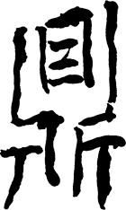
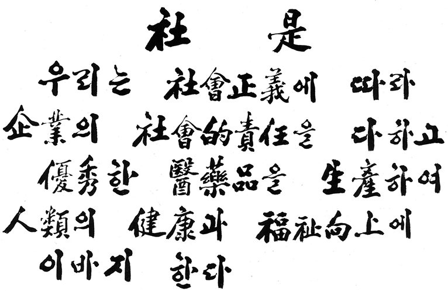
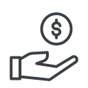

철학
철학과 솥정

솥 정(鼎)발이 셋, 귀가 둘 달린 쇠솥을 의미
동아쏘시오그룹의 ‘정도경영’은 보편적으로 쓰이는 글자, 바를 정(正)이 아닌 그룹 고유의 창업정신을 상징하는 글자, 솥 정(鼎)으로 재정의하였습니다. 동아쏘시오그룹 경영철학인 ‘정도경영’은 곧 ‘사회책임경영’입니다.
사시
정도경영(鼎道經營)은 곧 사회책임경영을 의미하며, 기업이 사회와 함께 성장하겠다는 의지가 표명되어 있습니다. 강신호 명예회장은 1975년 사장으로 취임하면서 창업정신인 정도, 성실, 배려의 가치를 바탕으로 사회적 책임을 포함한 사시(社是)를 발표하였으며, 지금까지 그 명맥을 유지해 오고 있습니다.
사회적 책임
-
- 고용
- 인재육성
- 기본권 보장
-
- 소비자
- 우수한 제품
- 소비자 중심
-
- 사회
- 사회공헌
- 복지향상
-
- 이해관계자
- 이윤확보
-

- 정부
- 납세의 의무
사시를 중심으로 사회적 책임의 대상은 직원, 사회, 정부, 주주, 소비자로 정의하였습니다. 기업은 직원에게 복지에 해당하는 기본권을 보장하고 인재를 육성하며, 사회를 위해 신약 개발과 환경 보호로 인류의 건강과 복지 향상에 힘써야 합니다. 또한 정부에 기업의 책임과 의무를 다하고, 주주를 위해 기업 건정성을 확보함으로써 이윤을 남겨야 합니다. 무엇보다 소비자에게 우수한 제품과 서비스를 제공하여 사회적 책임이 선순환되는 구조를 만들어 가야 할 것입니다.